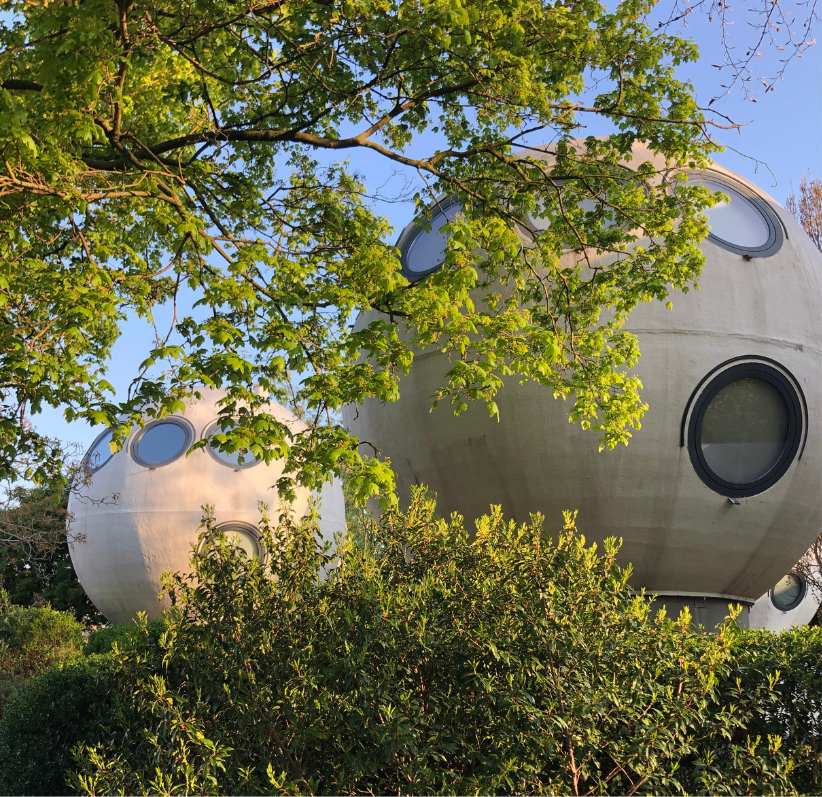

visit to the sphere homes
Eager for adventure, I hopped on my bicycle and set my sights on the Sphere Homes. A 100km journey from my flat in Amsterdam...
The ubuquity of cycle routes made the journey an absolute treat.
Traversing the Dutch countryside is super relaxing. A real flo-state of cycling is made easy by the abscense of hills. To my suprise I even came across a fine British exports: a red telephone box that had somehow made it to the remote village of X just south of Utrecht.
After scowering Google Maps for a camping spot, I settled on a small patch of farmland just outside of the city and set up my tent. Wild [urban!] camping is not for the faint hearted, myself included. Spooked by crunching leaves and a brief beam of light into my tent, the rest of the night was spent tossing and turning until I was awoken by the morning cockrel call and made my swift exit.
